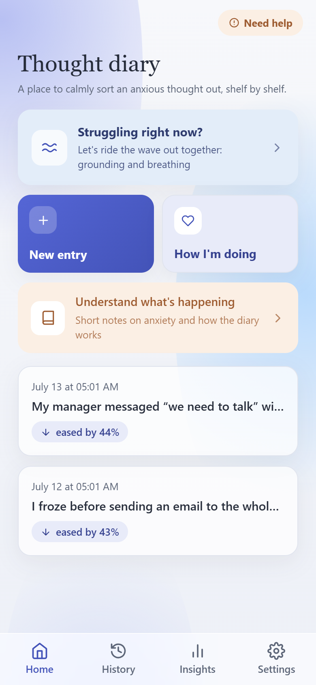

A gentle, quiet space to notice worried thoughts, kindly question them, and let them settle - one entry at a time.

You're not alone in this
A thought arrives - “what if something goes wrong?” - and it loops. It feels urgent, certain, and hard to argue with. For millions of people living with anxiety, this is a familiar, exhausting rhythm. It isn't a flaw. It's how an anxious mind tries to keep you safe.
How it works
Capture the worried thought exactly as it appears. Naming it starts to loosen its grip.
Gentle CBT-based prompts help you ask: is this thought a fact, or a feeling passing through?
Write a calmer, more balanced version - one you can return to next time the loop begins.
Built on evidence
The thought-record at the heart of Mindful Diary is a core CBT technique - one of the most studied, evidence-based approaches for anxiety. We didn't invent it; we made it easier to reach for in the moment.
A structured, evidence-based method for working with anxious thinking.
Small, repeatable practice - the way lasting change usually takes hold.
Nothing you write is uploaded, tracked, or shared. Mindful Diary is a place to be honest with yourself - because it stays with you, and no one else.
Every entry lives in your phone's local storage. It never leaves it.
No sign-up, no email, no password. Just open it and write.
No analytics, no third parties, no ads. Not now, not ever.
Mindful Diary is a self-help tool - it isn't a replacement for therapy or professional care. If your anxiety feels overwhelming, or you're going through a crisis, please reach out to a mental-health professional or a local support line. You deserve real support, and asking for it is a strength.
Free · Private · No account needed